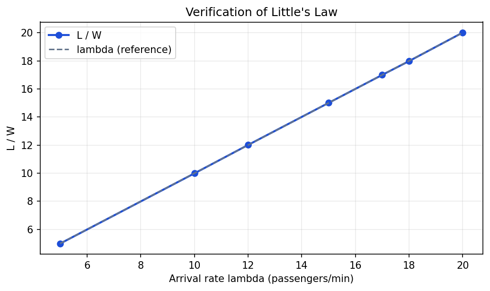
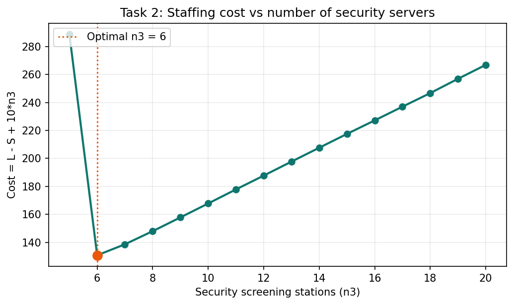

Operational problem
Before boarding, passengers compete for finite check-in desks and security lanes. Operators need estimates of average queue length, time in system, and whether the pipeline can keep up with peak arrival rates.
-
Task 1: Sweep arrival rate λ and check stability; confirm Little's Law (L ≈ λW) where the system is stable.
-
Task 2: Optimize security stations n3 using cost = L − S + 10·n3 among stable configurations.
Simulation model
Custom next-event simulator: a future event list (PriorityQueue) advances time; each event updates queues, servers, and time-weighted occupancy statistics.
Nq, Nc, Ns queue lengths; Sq, Ss free servers; clock t; cumulative occupancy o.
AC/DC (check-in), AS/DS (security), E (end). Each event updates stats then schedules successors.
Exponential arrivals and security service; lognormal check-in; truncated normal commute.
20–50 replications; 95% CIs on L, W, S; unstable if L explodes or S < λ.
Task 1: Arrival rate and Little's Law
λ swept from 5 to 20 pax/min (n1=25, n3=10). Ratio L/W compared to λ; divergence at λ=20 indicates queue instability.

Stable points lie on the λ reference line; at λ=20 the system cannot sustain S ≥ λ and L/W diverges.
| λ | L | W (min) | S | Status |
|---|---|---|---|---|
| 10 | 77.6 | 7.77 | 9.97 | Stable |
| 15 | 117.0 | 7.80 | 14.97 | Stable |
| 18 | 145.0 | 8.06 | 17.94 | Stable |
| 20 | 364.5 | 18.22 | 19.88 | Unstable |
Task 2: Security staffing
At λ=10, n1=25, evaluate n3 = 1…20. Configurations with L > 1000 are unstable. Minimize cost = L − S + 10·n3 over stable designs.

Optimal staffing at 6 lanes; extra servers add cost faster than they reduce congestion.
| n3 | L | W (min) | S | Cost | Status |
|---|---|---|---|---|---|
| 5 | 258.5 | 19.7 | 9.97 | 288.91 | Stable |
| 6 | 79.0 | 8.09 | 9.96 | 130.74 | Optimal |
| 10 | 77.9 | 7.81 | 9.95 | 167.79 | Stable |
| 20 | 76.2 | 7.64 | 9.99 | 266.91 | Stable |
Operational takeaway
Baseline (n3 = 10)
L ≈ 77.8 pax in system · W ≈ 7.8 min · S ≈ 10.0/min at λ=10.
Recommendation
Staff 6 security stations to minimize cost (130.74) while keeping S ≈ λ. Fewer lanes are unstable; more lanes overspend on staffing.
Downloads
Simulation notebook (Problem 2) and full SYSEN 5200 team report.